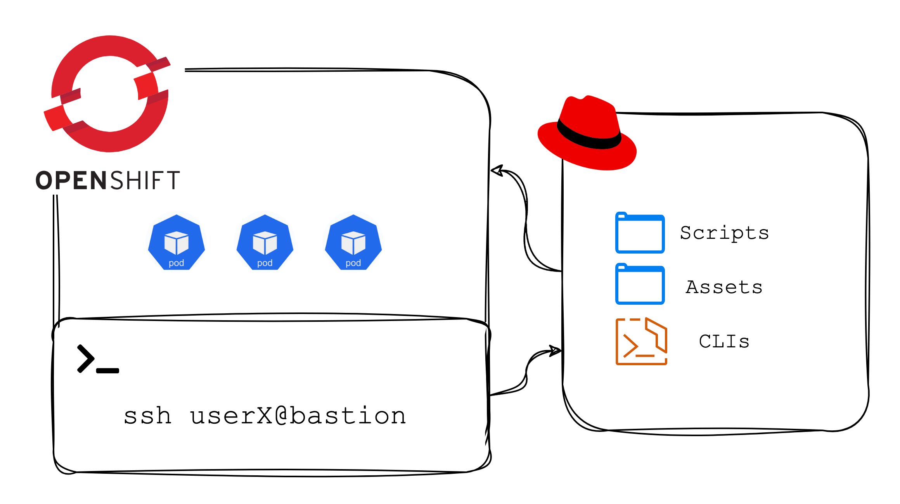
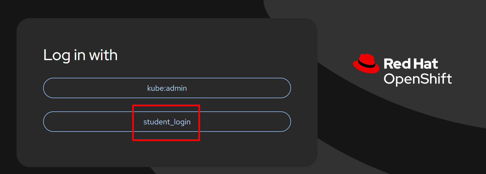
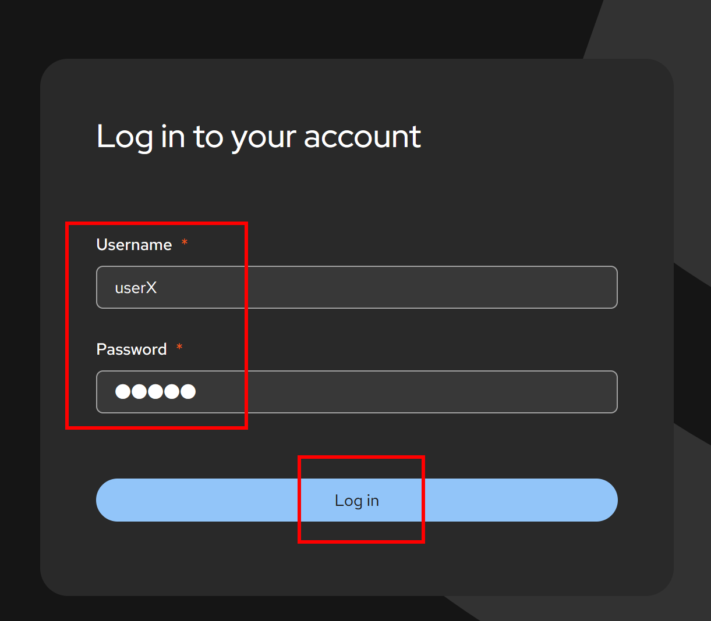
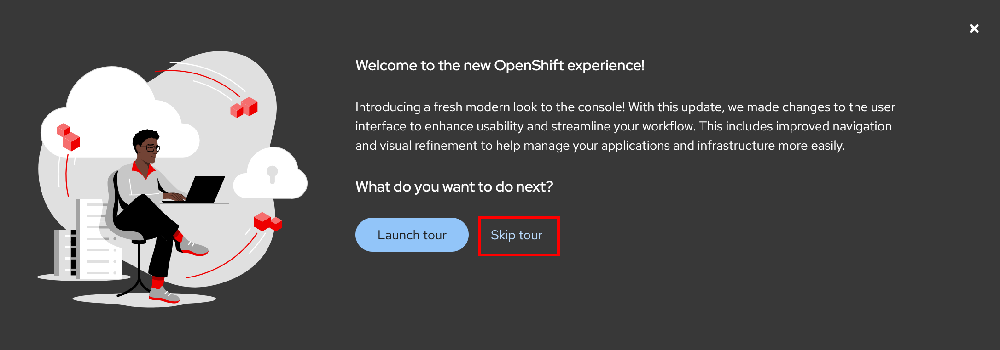
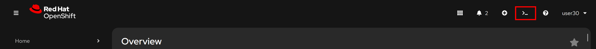
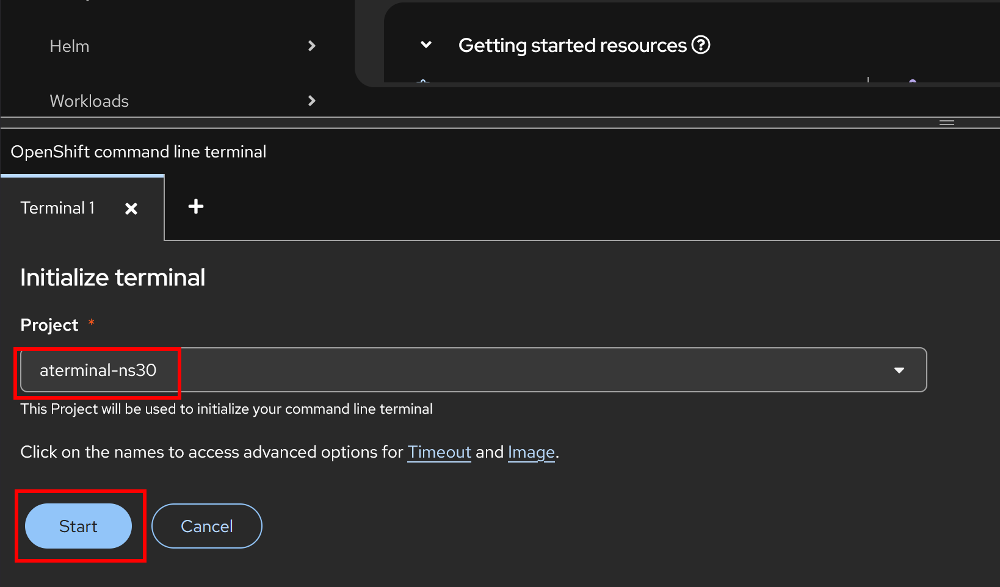
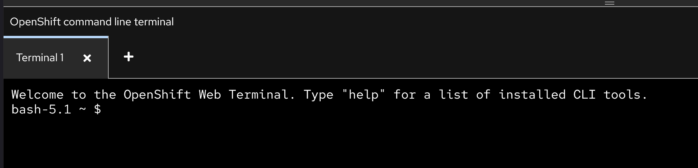
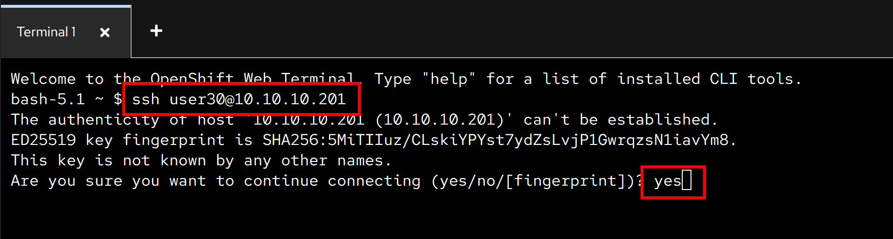
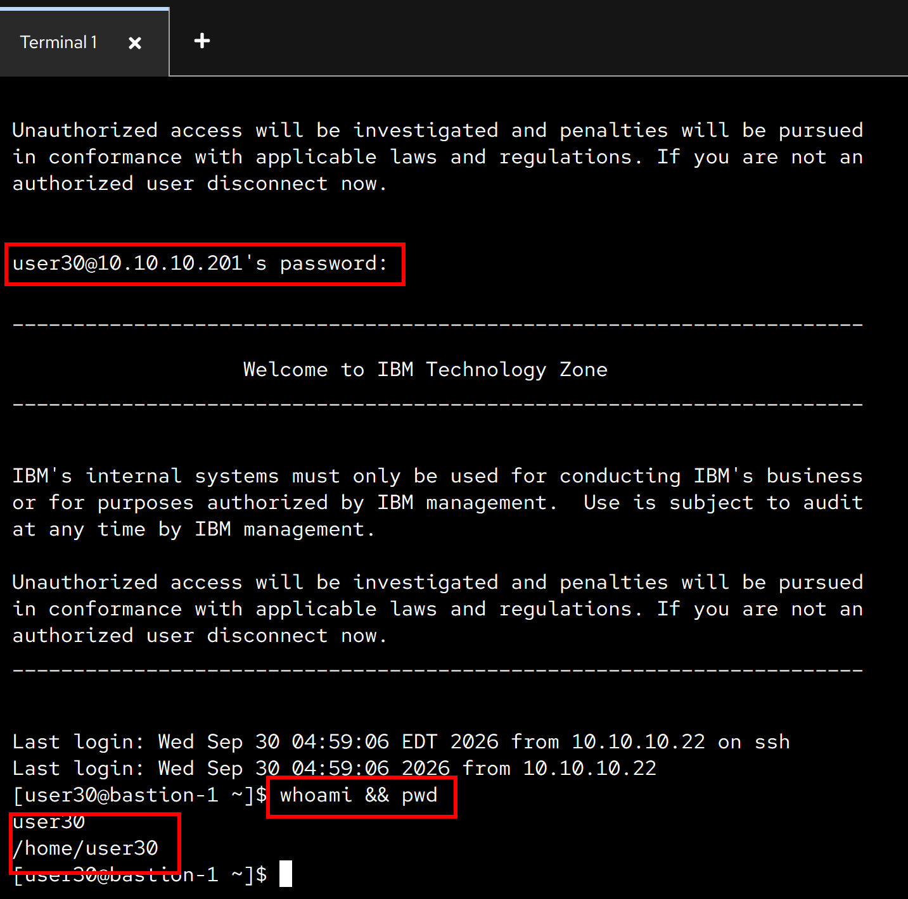

Red Hat OpenShift - Container Introduction Exercise
Disclaimer
This material has been created for training and learning purposes. It is not, by any means, official documentation supported by either IBM or Red Hat.

Workshop environment
The environment for this workshop is composed of:
- OpenShift cluster
- RHEL bastion
Both are shared amongst all participants. Your username and password for both will be provided by your IBM instructor.
Lab - Container Management Fundamentals with Podman
In this lab, you will learn and practice fundamental container lifecycle operations using Podman on the shared RHEL bastion node. You will connect to the bastion via the OpenShift Web Terminal, pull a publicly accessible container image, run and inspect the container, interact with its shell, inspect logs, and properly clean up the container and image.
1. Connect to the bastion node from the OCP Web Terminal
First, open the OpenShift Web Console at https://console-openshift-console.apps.itz-740vms.infra01-lb.lon04.techzone.ibm.com. Select student_login:

Login with your user credentials as provided by your instructor:

Click Skip tour:

Then, open the OpenShift Web Terminal from the top navigation bar:

Select your terminal Project aterminal-nsX, where X is your user number. Then click Start:

After the initialization is complete, you will be shown a web terminal. You will use it to connect to the bastion node where the Podman exercise will be run:

From the web terminal prompt, connect via SSH to the RHEL bastion node using your student username (userX where X is your user number), and the password provided by the instructor:
ssh userX@10.10.10.201
Enter yes when prompted about the server's key:
yes

Enter your password when prompted. Once connected, confirm you are in your home directory on the bastion node:
whoami && pwd
userX
/home/userX

2. Pull a container image using podman
We will pull a lightweight, publicly accessible sample application image from Docker Hub. In this case, we use the official Apache HTTP Server image (docker.io/library/httpd:2.4-alpine):
podman pull docker.io/library/httpd:2.4-alpine
Trying to pull docker.io/library/httpd:2.4-alpine...
Getting image source signatures
Copying blob e2de96513ba9 done |
Copying blob 6c7e7d1981af done |
Copying blob 36661b309997 done |
Copying blob ddb55e31b4d3 done |
Copying blob 4f4fb700ef54 done |
Copying blob 8210c35d0f11 done |
Copying blob e2e5f9b3fd79 done |
Copying config 71cc3b294a done |
Writing manifest to image destination
71cc3b294a7d5cab671380adce59be59f7f45683feafc524b5f017f2b7fa0376
3. Make sure the image has been successfully pulled
Verify that the image is now present in the local container storage on the bastion node:
podman images
REPOSITORY TAG IMAGE ID CREATED SIZE
docker.io/library/httpd 2.4-alpine 71cc3b294a7d 12 days ago 69.4 MB
4. Start a container with that image in the background
Start a new container in detached mode (-d) named sample-web-app, exposing port 8080 on the bastion host mapped to port 80 inside the container:
podman run -d --name sample-web-app -p 8080:80 docker.io/library/httpd:2.4-alpine
b74994ff44fa7784888d519c9cd7e86da0306726555abd44bb839f170d84ebdc
5. Make sure the container is running using podman
Check the list of running containers to confirm sample-web-app is active and listening on port 8080:
podman ps
CONTAINER ID IMAGE COMMAND CREATED STATUS PORTS NAMES
b74994ff44fa docker.io/library/httpd:2.4-alpine httpd-foreground 31 seconds ago Up 31 seconds 0.0.0.0:8080->80/tcp sample-web-app
6. Login into the container and verify you are inside
Access an interactive shell (sh) inside the running container using podman exec:
podman exec -it sample-web-app sh
Once inside the container shell prompt, execute a command to inspect the container operating system and verify you are operating inside the container environment:
cat /etc/os-release
NAME="Alpine Linux"
ID=alpine
VERSION_ID=3.24.2
PRETTY_NAME="Alpine Linux v3.24"
HOME_URL="https://alpinelinux.org/"
BUG_REPORT_URL="https://gitlab.alpinelinux.org/alpine/aports/-/issues"
Type exit to leave the container shell and return to the bastion prompt:
exit
7. Check the logs of the container
Inspect the output logs produced by the sample application running inside the container:
podman logs sample-web-app
AH00558: httpd: Could not reliably determine the server's fully qualified domain name, using 10.0.2.2. Set the 'ServerName' directive globally to suppress this message
AH00558: httpd: Could not reliably determine the server's fully qualified domain name, using 10.0.2.2. Set the 'ServerName' directive globally to suppress this message
[Wed Sep 30 09:08:25.446397 2026] [mpm_event:notice] [pid 1:tid 1] AH00489: Apache/2.4.68 (Unix) configured -- resuming normal operations
[Wed Sep 30 09:08:25.446577 2026] [core:notice] [pid 1:tid 1] AH00094: Command line: 'httpd -D FOREGROUND'
8. Stop the container
Stop the running container:
podman stop sample-web-app
sample-web-app
9. Confirm the container has stopped
Verify that the container is no longer active. Running podman ps should not list it, while podman ps -a shows the container with an Exited status:
podman ps -a --filter name=sample-web-app
CONTAINER ID IMAGE COMMAND CREATED STATUS PORTS NAMES
b74994ff44fa docker.io/library/httpd:2.4-alpine httpd-foreground About a minute ago Exited (0) 7 seconds ago 0.0.0.0:8080->80/tcp sample-web-app
10. Remove the container, and confirm it was removed
Remove the stopped container:
podman rm sample-web-app
sample-web-app
Confirm that the container has been completely removed:
podman ps -a --filter name=sample-web-app
CONTAINER ID IMAGE COMMAND CREATED STATUS PORTS NAMES
11. Remove the image, and confirm it was removed
Remove the downloaded container image from local storage:
podman rmi docker.io/library/httpd:2.4-alpine
Untagged: docker.io/library/httpd:2.4-alpine
Deleted: 71cc3b294a7d5cab671380adce59be59f7f45683feafc524b5f017f2b7fa0376
Confirm that the image is no longer present in local storage:
podman images docker.io/library/httpd:2.4-alpine
REPOSITORY TAG IMAGE ID CREATED SIZE
Finally, exit the Bastion node:
exit
Congratulations!
You have completed the container management fundamentals exercise with Podman on the bastion node.